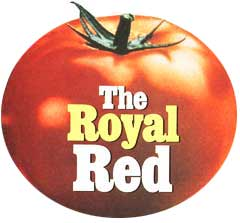
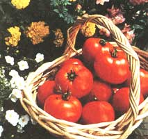
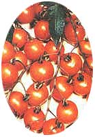
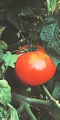
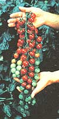
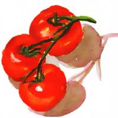

GARDEN PLANNER MINI MANUAL
The last word on growing first-rate tomatoes.
As anyone who has ever bitten into a summer morning's glistening tomato right off the vine can testify, "love apples" are the royalty of the vegetable kingdom. Rulers of all they survey. There are no other crops as magnificent and diverse, none available in such a kaleidoscope of different colors, shapes, sizes, and tastes. At last count, there were about 3,000 different varieties to choose from, and some experts place the figure higher still. A yellow tomato with the shape of a banana named Banana Legs; a green one that is almost identical to a green bell pepper and, not surprisingly, called Green Bell Pepper; the Great White, a sweet tasting white beefsteak; and Old Flame, a very flavorful, medium-size orange tomato with a red interior are just four examples of the amazing variation within the same species. Black tomatoes (well, they're almost black) are in vogue, and some of the best tasting tomatoes on planet Earth ripen green (yes, green!).
You no doubt have your favorite, that perfect fruit you stick with through every growing season, but restricting yourself to that one, however enticing, is ignoring a world of possibilities. I'd humbly like to encourage you to expand your horizons, just a bit. After years (and years) of growing hundreds of varieties, I have whittled down my list of favorites to the precious five that follow. Three are hybrid varieties, (forced crossing of two or more varieties to produce a different "hybrid"), and two are open-pollinated heirlooms (i.e., the ovary and the pollen that fertilized it are from the same plant).
By the way, try to ignore the shills of tomato growing who endlessly sell their miracle ripening techniques; the tomato is basically a very simple crop to grow. Unlike celery or corn, to name two, tomatoes can be harvested with minimal attention and little horticultural know-how. The only part of the equation that gets complicated is the particular climate of your garden. What has worked for me may not necessarily work wonders in your backyard, but I've tried to exclude from my short list those varieties that are prone to anxiety attacks in less-than-perfect growing conditions.
Before we get into the specific favorites, however, let's briefly create the "perfect tomato." Let's call it Mother Earth, a solid red, a nice size (10-14 ounces), sym metrically round, exceptionally tasty, impeccably shaped, and represents an artist's rendition of what a perfect tomato should look like. It is disease-free (not just disease-resistant), and it is not subject to disorders (e.g., cracking, uneven ripening, blemishes, etc.). No insect bothers this plant except beneficial ones, and it continues to grow vigorously and produce more fruit than anything imaginable. This description is not a fantasy, but a fairly accurate description of one of the most recent and amazing hybrids to grace my garden.
Big Beef
A 1994 All-America Selections Winner (which means experts in all growing regions found it exceptional), Big Beef is for every one's garden. Real "old-time" beef steak flavor and good fruit size (about 10-12 ounces, on aver age) are offered in a tomato that is literally picture perfect. Its deep red, round fruits are indeed very disorder-resistant and not prone to cracking, catfacing, sunscald, or all the other maladies that can make tomatoes less attractive-even ugly! And it is as disease-resistant as they come. Most likely, Sun Gold hybrids your Big Beef vines will be the last to be effected (if at all) by all those fungal, viral, and bacterial diseases that love to play havoc on tomatoes. Most large, beefsteak-type tomatoes ripen in about 80-95 days. Big Beefs mature in just 73 days, on average, and continue to produce large and tasty fruit until the onset of frost. In terms of productivity, other than cherry types, you probably won't get more fruit per plant than this one.
In addition to its tremendous harvests, exceptional taste is an equally significant consideration. Hybrids are vigorous plants ,but they're not supposed to taste this good. Well, this may have been true a decade ago, but in recent years, hybrid developers have become very taste conscious and nothing negates this old myth better than the delectable flavor of Big Beef (See the extended sidebar, starting on page 54, for specific growing tips.).
Early Girl (Improved Hybrid)
Early Girl could have just as well been named Old Faithful. When everything else slows down, quits or dies, this beauty keeps rolling along. Like Big Beef, it's very vigorous and produces until frost- but it starts crop production in just 52 days, about three weeks earlier than the aforementioned hybrid. You won't find tomatoes maturing much faster than this, and it offers surprisingly good taste for a relatively small (4-6 ounces), early variety. Overall, Early Girl is a very dependable, highly productive, nice tasting tomato with good disease- and disorder-resistance. It's not quite as prolific as Big Beef and it fruits are not as tasty and large, however, it's a powerful "work horse" that produces all season long and requires little attention or special treatment. Be sure to make room for this one!
Sun Gold (Hybrid)
A picture may be worth a thousand words, but the plant in the picture at right and on page 51 may contain a whopping 2,000 cherries (yes, 2000!). I was inundated and absorbed by my Sun Gold plants this past summer. They grew above me (way above), spread out in all directions, and meandered effortlessly by my feet as they reached out for more space. At 14-feet high, they had to be cut at the tops simply to work them and their fruit. But it's not just size and vigor that are important here, it's also the fruit count (delicious fruit, to boot) that's the real eye-opener. A conservative estimate is 1,000-1,200 cherries per plant. If you allow them to grow out and expand (like the one in the picture) you could possibly harvest 2000 sweet cherries from this very disease-resistant variety. And sweet they are! Sweet One Hundred and Sweet Million, two popular cherries known for their excellent sugary tastes, offer no comparison. Sun Gold ripens orange in about 57 days, and it is so sweet and delicious, that you'll better understand why the tomato is considered a fruit. Many plums, pears, and berries seem less "fruity." This small orange globe is truly a taste treat that also adds a nice color dimension to your basically red and green tossed salad!
ATTACK OF THE SON GOLD They surrounded me, grew way above my head, and meandered effortlessly in search of space.
Brandywine (Heirloom)
Brandywine is an old "pink" heirloom that originated in the Amish region of Pennsylvania and dates to at least 1885. Large fruits are produced on vines with interesting potato leaf foliage. Like many heirlooms (and pink ones particularly), Brandywine is quite disease-prone. Why is it a favorite? Because the taste is seriously worth the effort! Many tomato experts consider Brandywine to be the best tasting tomato in the world. No doubt, a consensus of all those in the know would rate it at least near the very top. It is difficult to describe the unique taste of this old favorite (More reason to grow it yourself!). It has a definite sweetness to it, but a slight tang of acid seems to accompany the sugary flavor, a blend that is delightfully different. The taste is exclusive to Brandywine and it is certainly worth confronting its disease obstacles in view of its outstanding epicurean values.
Incidentally, don't be frightened off by the word diseases-almost all tomato plants (even the hybrids) will eventually be subjected to it. The general rule of thumb is, hybrids have a better resistance and as a result, take longer to succumb than do most heirlooms. The catch, when dealing with diseases then, is to harvest some fruit before the plant "gives in" to it. And the taste of Brandywine is worth betting on the race. With good culturing habits and some care and attention, you don't have to be a rocket scientist to harvest 6-12 one-pound delights from this variety. Yes, they are disease prone and have a penchant for disorders, but when you bite into your first Brandywine, you'll make sure there will be others to follow!
Radiator Charlie's Mortgage Lifter (Heirloom)
Another pink delectation, this giant was developed in West Virginia in the 1930s. Mortgage Lifter is well known for extra large fruit (some experts say it averages 2 1/2- pounds), but I've never attained such gargantuan results. Mine have ranged in the 1-2 pound area, still averaging a hefty 1 1/4-pounds per tomato. As a color category, few will deny that pink tomatoes offer some of the best "tasters" in the tomato kingdom. Mortgage Lifter is no exception-its flavor is simply awesome. Unlike most pink tomatoes, however, this variety offers an additional benefit in that it is quite disease resistant. Another, somewhat uncommon characteristic for a pink variety is in Mortgage Lifter's ability to produce large numbers of fruit. Good fruit count combined with large tomatoes, adds up to plenty of pounds of great tasting fruit per plant. It is subject to some fruit disorders, so its crops are far from picture-perfect. However, its super taste more than compensates for this small liability. When you eat a Mortgage Lifter, you simply won't care what you're looking at. This one is a great heirloom that offers the benefit of some strong hybrid characteristics. It is also a fabulous variety to introduce yourself to the wonderful world of heirloom tomatoes.
These are just a few of my favorite tomatoes. And if you don't like any of the five, you have about 2,995 others to consider. Give these a shot, however, and some of them should become your favorites. Now we'll get down to the nuts and bolts of getting an enviable harvest in by August.
But before I get started, remember to grow from seed. You'll not only be in control of your plants from day one but the immense variety available to you can't be found at the gardening store. Germinating your own isn't a difficult task, and two excellent tomato-specialty seed companies are listed below to help you get going.
A CAREER TOMATO GROWER'S SECRETS
Yes, the tomato is a relatively easy plant to grow. Regardless of what you do (or do not do), you should experience some kind of harvest from Lycopersicon esculentum, the Latin name given to this wondrous species by horticulturists and botanists the world over. But if you are going to embark on a tomato gardening effort, you should get the most from your toil. Why be satisfied with 30 pounds of fruit from a plant when you can turn that amount into 70 pounds with just a little bit more time and effort? (The record, incidentally, is 342 pounds per plant, achieved in 1987 by Charles Wilbur of Crane Hill, Alabama). And why be plagued by diseases and insects when there are simple solutions? Here are the basics.
Soil
Soil and its conditioning provides the groundwork (sorry) for a good culturing environment. It should be prepared with three primary considerations in mind:
Elemental content -There are 13 elements that are vital to good tomato growth. These are nitrogen, phosphorous, potassium, magnesium, calcium, sulphur, iron, manganese, copper, zinc, molybdenum, boron, and chlorine (yes, chlorine). Don't be alarmed by that intimidating list, because many of these elements are found in sufficient amounts in almost everyone's backyard. Others, however, like nitrogen and calcium, must be added or replenished. More on that in a minute.
Organic content -Organic matter (peat moss, leaves, grass clippings, compost, etc.) must be present in the soil medium to feed the billions upon billions of microorganisms that ultimately feed your plants.
Soil texture -The soil must be well aerated, clumpy, and loose for a number of reasons. First, those important microorganisms just referred to are animals that require air to breathe. A hard clay medium won't allow this vital gas to effectively pass through and keep these important "food makers" alive. Second, plant health and growth is dependent on root health and growth. The harder it is for roots to push through solid, compacted soil, the more difficult it will be for plants to thrive and grow. Finally, those roots, and the rest of the plant, depend on water-and plenty of it. Well-aerated, clumpy soil absorbs and stores this vital nutrient, releasing it to the roots when the plant needs it. In heavily compacted mediums, the water has a tendency to simply "roll away."
Generally speaking, the following mixture should give you the right content and texture for tomato cultivation:
Take 50 percent of your backyard ground dirt and to it add 25 percent peat moss and 25 percent composted manure (or a combination of compost and "unfresh," treated manure). To every wheelbarrow-full of this concoction add about one cup of garden lime and mix well. In areas where soil and clay are particularly heavy and, add a shovel or two of sand or Perlite or vermiculite to further loosen up the compactness of the original ground material. Amounts will vary depending on your own specific needs and conditions.
The recommended pH range for tomatoes is 6.0-7.0 ,which can be tested by pH test kits sold at most garden centers. However, a good mixture similar to the one described should provide a proper pH level necessary for healthy tomato growth. Clue: look for the advent of plenty of earthworms. The presence of these slimy creatures generally infers the right soil conditions.
Planting
I'll bet you think you know all about digging a hole. You place a tomato plant 6 to 8-inches deep into it, fill in the surrounding area with soil, and happily await the growing season that is about to commence, right? Well, there is a real liability in this most common planting method, particularly when you consider the time of year it's usually done. Almost all tomato gardeners plant in early to midspring when the ground is still quite cold. But tomato plants only thrive when the roots are warm. That cold, unaccommodating "pit" doesn't do much for plant growth until that deep hole warms up and the roots begin to dig in and expand. Until that time, chances are you have wasted a couple of weeks of your garden time as well as the plant's. That's why I advocate trench planting.
Dig a trench about 3-inches deep, 3-inches wide, and a few inches longer than the transplant being cultivated. Place some fertilizer granules of your choice (like 510-5) along the length of the trench and cover it with about one inch of soil. Water well. Take your transplant and remove all but the top few leaves. Gently lay the entire plant (roots and stem) horizontally in the trench and with great care and caution "bend up" and hold the leaf-end so it remains above the soil line. With the other hand, pack down the roots and stem with soil so that just a few inches of the leaf-end stem remain visible (above the soil line). Do not be concerned that your aboveground plant is not perfectly vertical at this time. A few days of sunshine will straighten out the stem nicely.
Trench planting offers some obvious advantages. Your young root system is not freezing 6- to 8-inches down in a cold, restrictive environment, but nurturing just 2 inches from the ground surface where the sun's rays have already effectively penetrated and provided a warm, comfortable "heat zone" for immediate growth. In addition, you have turned several inches of your stem into an expanded root system thereby allowing for an even more rapid and vigorous start. Most important, the results of all the above have probably added a week or two of actual growing time to your "productive" tomato plant season. And more growing time adds up to more fruit, bigger tomatoes-and a noteworthy increase in crop production.
Fertilizing
The primary source of fertilizer for your tomatoes should be the organic material placed in the soil. The peat moss, compost, and manure previously recommended gives an "organic richness" to your growing medium. Putting it on a more meaningful perspective, the billions of microorganisms in your garden ground thrive on this organic matter, digest it and excrete it in a form that can be absorbed and utilized by your hungry crops. Without this organic matter, these organisms would starve, and ultimately, so would your plants. This most important plant food source, however, has its ups and downs, primarily based on temperature (but other factors, too). When the ground is relatively cold these microorganisms become very inactive and produce very little food for your plants. When the temperature is warm and hot as it is during midsummer, these microorganisms go into "overtime" and generally produce an abundance of nutrients for the crops nurturing above them.
GROW ONLY FROM SEED Store-bought plants can be easily weakened by temperature changes. Additionally, garden centers are natural playgrounds for all kinds of insects and diseases. Spend the extra time and use seed.
Synthetic fertilizers like Miracle-Gro Tomato Food (applied in liquid form) and Hoffman Tomato Food (dry granules placed near the plant's roots) could be used as supplements to the basic "organic" food supply. The trouble is, most gardeners apply the bulk of these synthetics at the wrong time. They "heavy-up" with these supplements during mid-summer, probably because this is the apex of the gardening season when they are most actively involved with the hobby, and the presence of a bountiful supply of ripening fruit motivates them to exercise more culturing techniques than are sometimes necessary. Actually, the best time to employ synthetic fertilizers is both early and late in the season when cold (or cooler) weather prevails. Between these cold stages is usually a nice warm period that entices your "army of microorganisms" to produce plenty of food for your constantly consuming plants.
There are other factors that regulate the degree of organic food production besides variations in soil temperature (change in pH, water conditions, etc.), so it is not a bad idea to provide a synthetic booster intermittently. This gardener gives his tomatoes a "dose" about once every two weeks during most of the season and increases the frequency (usually to about once a week) early in the season and towards its end in recognition of colder weather (and colder ground) conditions.
Synthetic fertilizers in conjunction with the organic ones produced in your soil collectively afford a sound fertilizing program for tomatoes. Get more mileage from them, however, by understanding how and when they work best. Suggestion: Try applying a liquid-based fertilizer like Miracle-Gro in warm to hot (not boiling) water, in the early spring or fall. Be sure to pour this solution directly into the ground around the plant's base, not directly onto the plant. Scorched leaves will not enhance anyone's tomato growing efforts.
Insects and Diseases
The greatest defense against pests is the development of strong, vigorous plants. And again, on this behalf, I urge you to grow your own from seed. Store-bought varieties can be easily weakened by extremes in environmental conditions and poor cultural maintenance. Furthermore, the garden center is a natural playground for all kinds of insects and diseases. Second, choose varieties that are known to have good pest-resistance to those maladies most common to your specific area. Your gardening store or county agriculture agent can give you good advice on this subject. Keep your tomato plants off the ground (stake them and cut off bottom branches), and cover the soil around the plant with a protective mulch such as a plastic cover. This will restrict soil-based diseases and ground insects from taking an easy trip up. Water is a great disease spreader, so when watering, aim the flow at the ground-not the plant. And with disease control in mind, note that the best time to water is early morning just prior to the arrival of the sun's drying rays.
In terms of insects, remember that they are natural partners with plants. It's when their population get out of hand that they become pests. So do not become too alarmed when you find some grazing on your plants. It's when their population explodes that action must be taken. Generally, an occasional spraying of a mild soap solution (like Safer Soap) eliminates a surprising number of common insect problems. If the situation becomes genuinely unhealthy, touch base with your country agricultural agent before you employ more aggressive insect sprays. The service is free and the agents are very cognizant of local pest problems and their treatments. Even a little too much spraying will do more harm than good. Stay tuned for Bob's tomato harvest and storage tips later this summer.
THE GREATEST SNACK IN THE WORLD
In pasta with a little cream sauce, they can bring a grown man to tears. In salads, mixed with a few chunks of Parmesan cheese, they will end all table conversation for extended periods. They are sun-dried tomatoes, the sweetest, most electric snack that ever graced a sandwich, main course ...or bowl of yogurt for that matter. Don't let your harvest get away from you without devoting 20 or 30 tomatoes to drying. They'll keep for a year ...and seem to even taste better the older they get.
If you live in the sun-drenched Southwest, you'll have sufficient light to naturally dry your harvest. Spread slices of tomato (about half an inch thick) on trays. Don't let the slices overlap. Cover the trays with as fine a screen as you have (barring that, cheesecloth is fine), and place in direct sunlight. The drying process will take from three to six days, so don't be in a rush to haul them in too soon.
I don't, but you may have a few hundred dollars burning a hole in your checkbook and are ready for an electric food dehydrator. It's a great little item and a godsend if you have to prepare many pounds of storable food for a season at the homestead.
For the rest of us, an oven will have to do. It has the uncommon virtue of being already paid for. Preheat the oven to the lowest setting possible (about 150°F is ideal), and let three or four trays of tomatoes camp out in there for about six hours. Don't space the trays fewer than than 3 or 4 inches away from each other, and check them every hour or so. Oven temperatures have a habit of changing radically when set to low levels, particularly if you have a gas range.
Whatever your method of drying, the tomatoes will need to be cured before the process is complete. Place them in an open container (covered with the fine screen again) in a warm room with a constant supply of fresh air. Stir them once a day and they will be ready in half a week. Store them in mason jars and you'll still be eating the world's best snack six months from now.
Seed Sources
Tomato Growers Supply Company P .O. Box 2237 Fort Myers, Fl 33902 Tel: (941) 768-1119 Totally Tomatoes P .O. Box 1626 Augusta, Ga 30903 Tel: (803) 663-0016
|
 The Early girl hybrid |
 Sun Gold hybrids |
 The Brandywine heirlom |
|
 The amazing Sweet 100 hybrid |
 Illustrations: Bari Goodman Lloyd |
 |